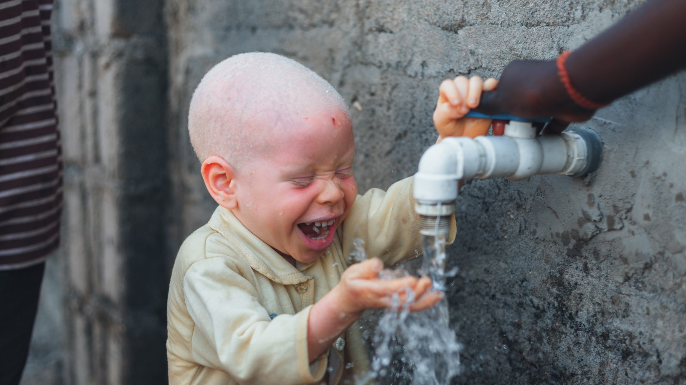
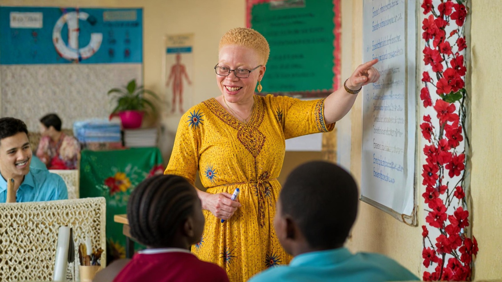

Reporting and perspective on the issues TASPO works on — from technology access to student wellbeing.

The real story of albinism in Tanzania — the discrimination, the danger, and the everyday impact on health and life, and how change is happening.
Read the story →
How chalk dust affects the health of students and teachers in classrooms without whiteboards, and why switching away from chalk matters.
Read the story →
How attitudes toward people with albinism in Tanzania have shifted across generations — from ancient folklore to today's advocacy movement.
Read the story →
Why teachers with albinism are hit hardest by chalk and blackboards, and how swapping to whiteboards removes one of their biggest daily obstacles.
Read the story →